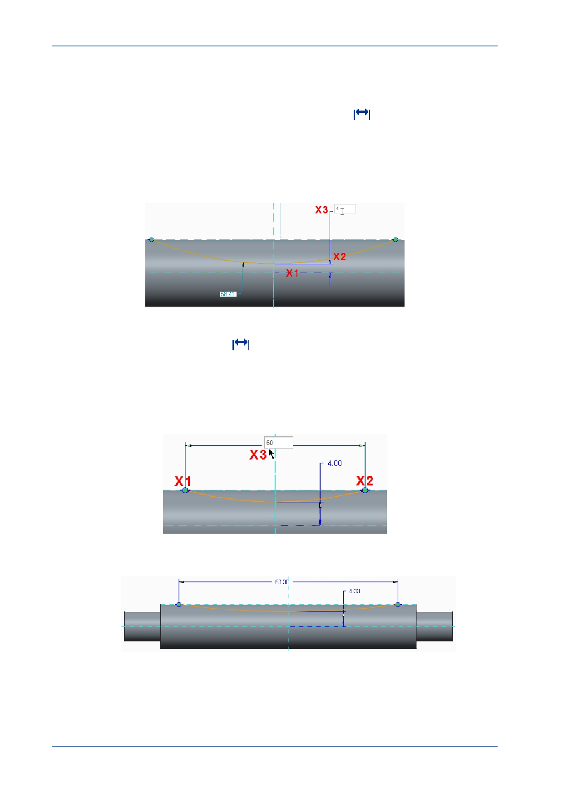

PTC Academic Program
6. Dimensioning the arc:
If necessary, zoom in closer to the arc.
From the Dimension group, click Normal Dimension
.
Click to select the horizontal reference line at X1 in the illustration below.
Click the arc at X2 .
Middle-click at X3 to place the dimension value.
Type 4 and press ENTER .
With the Normal Dimension
still active, click the end of the arc shown at X1 .
Click the other end of the arc X2 .
Middle-click at X3 to place the dimension value.
Type 60 and press ENTER .
Middle-click to release the dimension tool.
The dimensioned sketch should look like this.
© 2012 PTC
Creo Parametric 2.0 Primer
Page 57